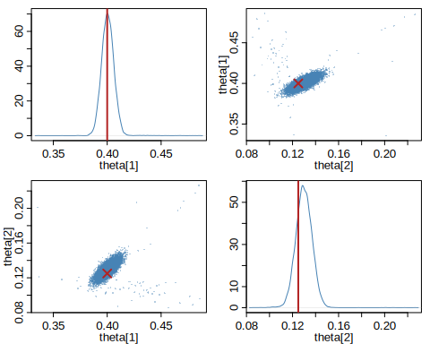
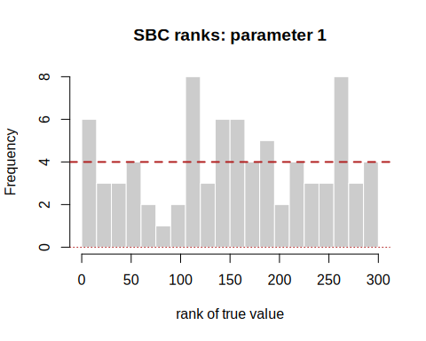
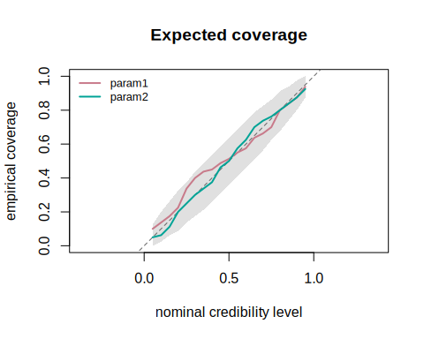
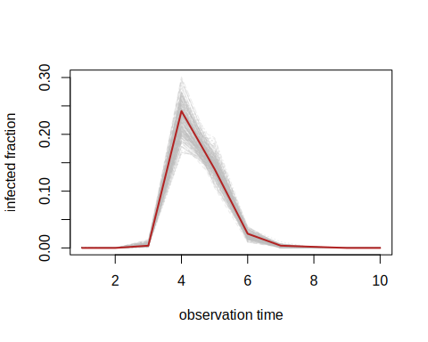
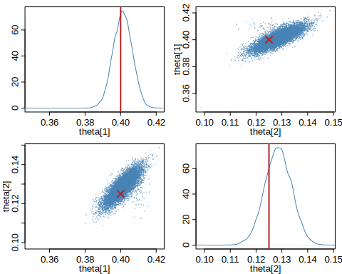

This vignette works an applied, likelihood-free problem end to end: recovering the transmission and recovery rates of an epidemic from a noisy incidence curve. There is no tractable likelihood — the data come from a stochastic compartmental simulator — which is precisely the setting simulation-based inference was developed for.
The model
The classic SIR model splits a population of size
N into Susceptible, Infected, and Recovered compartments.
Two rates govern the dynamics: the contact rate
(how fast the infection spreads) and the recovery rate
(how fast infected individuals recover). The package includes this model
as a built-in task.
library(neuralsbi)
task <- task_sir() # prior + simulator for the SIR model
task
#> <nsbi_task> sir: 2 parameters -> 10 data dimsThe task bundles a prior (log-normal on
)
and a simulator that solves the SIR dynamics and returns
the observed infected fraction at 10 time points.
Fit an amortized posterior
We simulate from the prior and train a neural posterior estimator. A Mixture Density Network is a good default here; the posterior is smooth and unimodal.
fit <- npe(task$prior, task$simulator,
n_simulations = 3000,
density_estimator = "mdn",
max_epochs = 250, seed = 1)Training is amortized: this one fit can be conditioned on any incidence curve without re-simulating.
Condition on an observation
Suppose we observe an outbreak generated by (basic reproduction number ).
theta_true <- c(beta = 0.4, gamma = 0.125)
x_obs <- task$simulator(matrix(theta_true, nrow = 1))
post <- posterior(fit, x_obs = x_obs)
summary(post, n = 5000)
#> parameter mean sd q2.5 q25 q50 q75
#> 1 theta1 0.4007750 0.006536198 0.3897076 0.3967231 0.4005885 0.4044068
#> 2 theta2 0.1300866 0.007765928 0.1168075 0.1254525 0.1300085 0.1347168
#> q97.5
#> 1 0.4124505
#> 2 0.1436619
draws <- sample(post, 10000)
pairplot(draws, truth = theta_true)
plot of chunk unnamed-chunk-4
The posterior concentrates around the true rates, and — importantly — reports its own uncertainty.
Is the posterior calibrated?
A posterior is only trustworthy if it is calibrated. We check with Simulation-Based Calibration and an expected-coverage plot, neither of which needs a reference posterior.
res <- sbc(fit, task$simulator, n_sbc = 80, n_posterior_samples = 300,
seed = 2)
#> Warning in stats::chisq.test(tab): Chi-squared approximation may be incorrect
#> Warning in stats::chisq.test(tab): Chi-squared approximation may be incorrect
res # per-parameter uniformity p-values (large = good)
#> <nsbi_sbc> 80 trials, 300 posterior samples each
#> per-parameter uniformity p-values (large = calibrated):
#> 0.522 0.940
plot_sbc(res, param = 1) # rank histogram: flat = calibrated
plot of chunk unnamed-chunk-5
plot_coverage(res) # empirical vs nominal coverage: on the diagonal = good
plot of chunk unnamed-chunk-5
If the rank histograms are flat and the coverage curve hugs the diagonal, the posterior’s credible intervals mean what they say: a 90% interval contains the truth about 90% of the time.
Posterior predictive check
Finally, push posterior draws back through the simulator and compare the predicted incidence curves to the observation.
pp <- posterior_predictive(post, task$simulator, n = 200)
matplot(t(pp), type = "l", col = adjustcolor("grey", 0.3),
xlab = "observation time", ylab = "infected fraction")
lines(as.numeric(x_obs), col = "firebrick", lwd = 2)
plot of chunk unnamed-chunk-6
The observed curve should sit comfortably within the cloud of predictive draws. A systematic mismatch would flag model misspecification — a signal no point estimate can give you.
Spending simulations where they matter: sequential NPE
An amortized fit spreads its simulation budget over the whole prior,
but when a single outbreak is of interest, most of those simulations
describe epidemics nothing like the observed one. Sequential NPE
(npe_sequential(), using truncated proposals) alternates
simulation and training, restricting each new round of simulations to
the parameter region the current posterior considers plausible.
fit_seq <- npe_sequential(task$prior, task$simulator, x_obs = x_obs,
n_rounds = 2, n_simulations = 1500,
density_estimator = "mdn", max_epochs = 200, seed = 3)
fit_seq # per-round budgets and acceptance rates
#> <nsbi_snpe> Sequential NPE fit (TSNPE, truncated-prior proposals)
#> density estimator : mdn
#> rounds : 2
#> simulations : 3000
#> acceptance/round : 1.00, 0.32
#> targeted x_obs : 0, 0, 0.004, 0.241, 0.139, 0.025, 0.004, 0.002, 0, 0
#> NOT amortized: only valid at (or near) the targeted x_obs.
#> -> build a posterior with posterior(fit, x_obs = ...)
post_seq <- posterior(fit_seq, x_obs = x_obs)
draws_seq <- sample(post_seq, 10000)
pairplot(draws_seq, truth = theta_true)
plot of chunk unnamed-chunk-7
With a comparable total simulation budget, the sequential fit
typically yields a tighter posterior around this particular outbreak.
The trade-off: the result is specific to x_obs, so
conditioning on a different incidence curve means refitting.
Where to go next
This case study covered the whole workflow: prior, simulator,
amortized training, conditioning, calibration checks, predictive checks,
and a sequential refinement. The earlier vignettes treat each stage in
more depth — vignette("neuralsbi") for the core functions,
vignette("density-estimators") for when to use
"maf" or "nsf" instead of the MDN, and
vignette("diagnostics") for the complete set of checks.